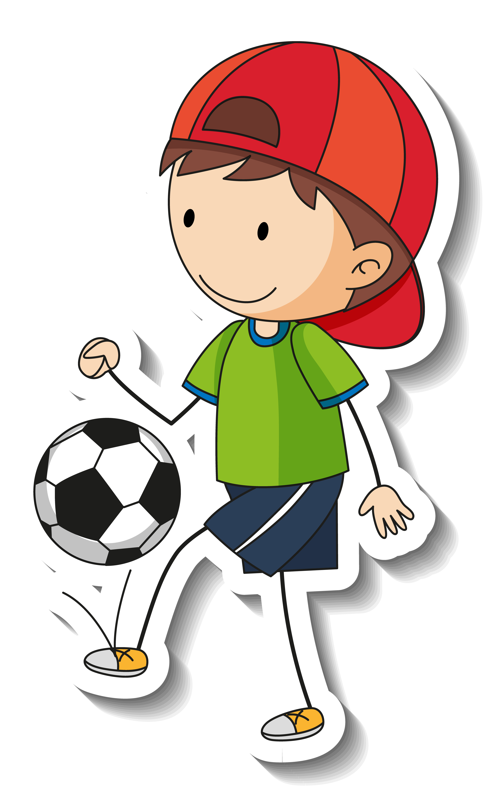

Zlatan Ibrahimović

About the Legend
Zlatan Ibrahimović born 3 October 1981 is a Swedish former professional footballer who played as a striker. Ibrahimović is known for his acrobatic strikes and volleys, technique and ball control, as well as his physical dominance. He is regarded as one of the greatest strikers of all time and is one of the most decorated footballers in the world, having won 34 trophies in his career. He has scored over 570 career goals, including more than 500 club goals, and has scored in each of the last four decades.15 famous quotes from King Zlatan
- “I do not need a trophy to tell me I am the best.”
- “The older I get, the better I get. like red wine.”
- “First I went left; he did too. Then I went right and he did too. Then I went left again and he went to buy a hot dog.”
- “Nothing is written in stone, as a career is an unpredictable journey.”
- “No way, Zlatan doesn’t do auditions.”
- “I can’t help but laugh at how perfect I am.”
- “When people criticize me, instead of putting my head down, it gives me energy to do even more.”
- “What do you mean, ‘present?’ She got Zlatan.”- On his ex-girlfriend’s engagement gift.
- “I came like a king, I left like a legend.”- When Zlatan left PSG
- “We are looking for an apartment; if we do not find anything, then we will buy a hotel.”
- “Give them a bicycle with my autograph and that will be enough.”
- “What [John] Carew does with a football, I can do with an orange.”- Asked what he thought of Carew’s flicks and tricks from a game.
- “I decide my future. I decide what I want to do. Nobody else.”
- “I can play in the eleven positions because a good player can play anywhere.”
- “It’s true I don’t know much about the players here, but they definitely know who I am.”- After he arrived in France to play for Paris Saint Germain in 2012.
For more information, check out
Zlatan Ibrahimović on Wikipedia.
Developed by the The Wub..
Image Designed by Freepik